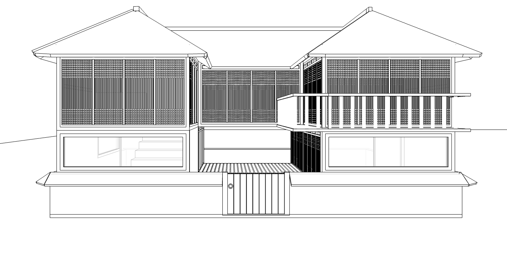

HanOk 23
Oct 28, 2023
In our daily lives, we often prioritize convenience and overlook the importance of tradition. With this artwork created using SketchUp Free and D5 Render, I aimed to celebrate tradition and blend it with modernity. The initial inspiration for the modeling came from Gyeongbokgung Palace in South Korea.


